GitHub - Basics
https://github.com/
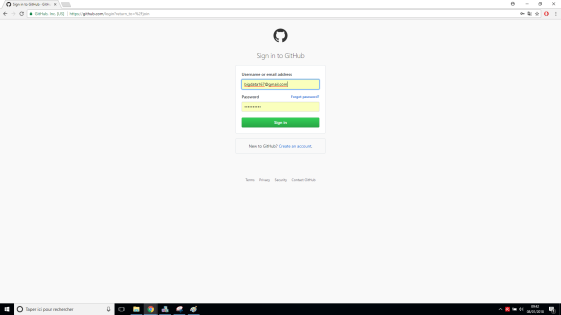
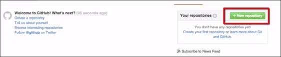
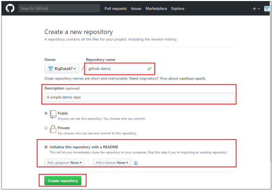
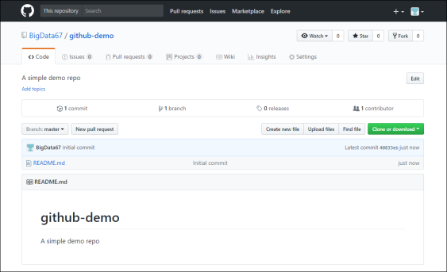
Variables d'environnements
Ouvrir un terminal Git Bash dans le répertoire de votre choix, ici c :\space
1
git version2
git config --global user.name "bigdata67"
3
git config --global user.email "bigdata167@gmail.com"
4
git config --global --list
Cloning Repository
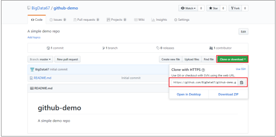
1
git clone https://github.com/BigData67/github-demo.git2
ls3
cd github-demo4
ls5
git status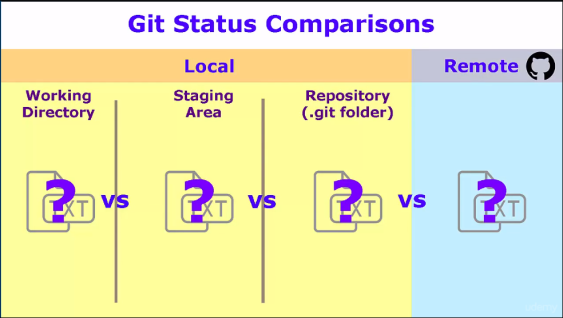
Création de fichier
1
echo "Test Git creation file demo" >> start.txt
2
ls3
cat start.txt
4
git statusNous voyons ici le contenu du working directory
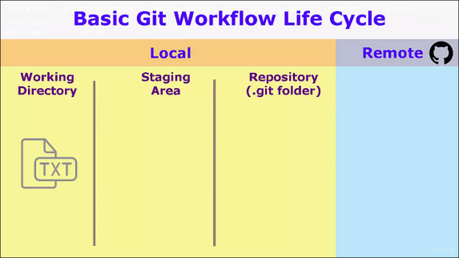
Ajout du fichier dans le stagging erea
1
git add start.txt
2
git status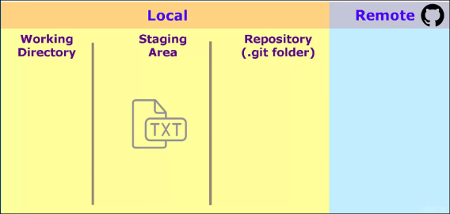
Commit
1
git commit -m "Adding start text file"
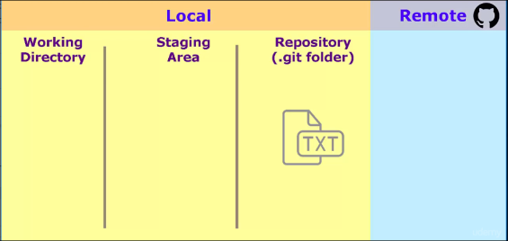
Push
1
git push origin master2
Username...: bigdata167@gmail.com
3
Password...: mypass
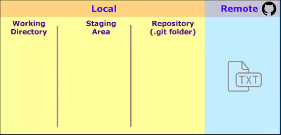
Refresh the browser to view the file in github
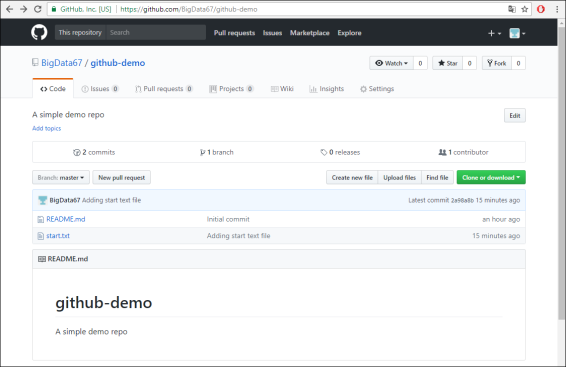
Push with ssh
https://help.github.com/categories/managing-remotes/
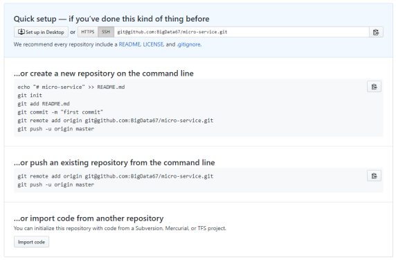